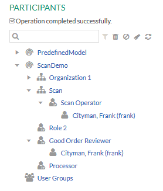

Spawning Subprocesses
This tutorial describes how spawning of a root process instance
creates a sub-process and copies data associated with it.
Assuming a scenario where a company often receives scanned documents in the Stardust Portal. But
the scan operator submits the scanned documents to wrong process definition. Thus, the document enters
in the wrong workflow. Also, the company needs a single document available to multiple processes.
For details refer to the
Common Usage Pattern
section of the
Spawning a Sub-process
chapter of the
Concepts handbook.
This tutorial covers the following:
For details on the spawn subprocess functionality, refer to the
Spawning Processes chapter of the
End User Handbook.
Importing the Example Model
Use the ScanDemo example model which contains
several process definitions that allow process attachments.
- Download the following ZIP file containing the example model
in folder
managing-unstructured-workflow:
all-tutorials.zip
- Create a dynamic Web project designed to deploy Stardust Process
Platform models to run in the Stardust Portal.
For detailed information on creating dynamic Web projects for usage with
the Stardust Portal, please refer to the
Rapid Application Development guide.
- Right-click the project and select
Import > Process Manager > Process Model.
Click Next and browse to the location of the example
model extracted from the zip file.
Deploying and Running the Model
Perform the following steps to deploy your example model and run
the project in the Stardust Portal:
- Start your server and deploy the model. For details on how to
deploy a model, please refer to the chapter Deploying a Workflow Model of the Support Case Example.
- Start the Stardust Portal as described in the chapter
Logging in the Stardust Portal of the End User
Handbook. Login as administrator (motu/motu). You can use the
Shift-F8 short key.
- Switch to the Participant Manager View of the Administration Perspective.
- Create a user and assign him the roles Scan Operator and
Good Order Reviewer. For details on how to create a new user, refer to section
Creating a new User of the chapter
Creating and Editing User Accounts of the Stardust Portal documentation.

Figure: Assign participant to roles
- Logout and login again as the new user.
Executing the Workflow
Perform the following steps to execute the workflow and spawn a process:
- Scan a document into the Loans process definition
- Login to Stardust Portal with the credentials of Goods Order Reviewer
and locate the Loans process instance
- Activate an activity in the newly created process instance and enter details
Spawning the Process
- In the toolbar, click the Spawn Process icon
Figure: Spawn Process icon
- Select Brokerage and HELOC process to start from the Spawn Process dialog
Figure: Select processes to start
- Select the View Spawned Work Items checkbox to open the worklist
view of the spawned process(es).
- If you like to activate all spawned work items, select the
Activate Spawned Work Items checkbox.
- Click OK to start the spawn option.
Viewing Spawned Work Items
If the View Spawned Work Items checkbox was selected, the worklist
view of all spawned process(es) opens.
Figure: View Spawned Work Items
Viewing the Process History
Expand the Process History panel of each newly started process and confirm
that they are shown as sub-processes of the root process instance

Figure: Process History
- In the Process History panel, click the Process Details icon of HELOC sub-process.
The HELOC process details get displayed.
Figure: Process Details of the Sub-process
Viewing the Data
- Expand the Process Documents panel of the HELOC sub-process. The copied documents get displayed under
Process Attachments.
Figure: Process Document - Copied Document
- Similarly, check the copied document for the Brokerage sub-process.